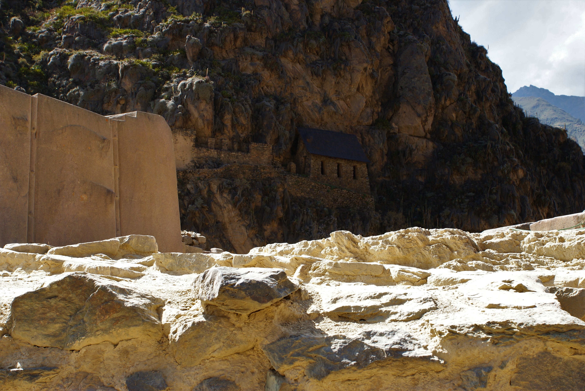
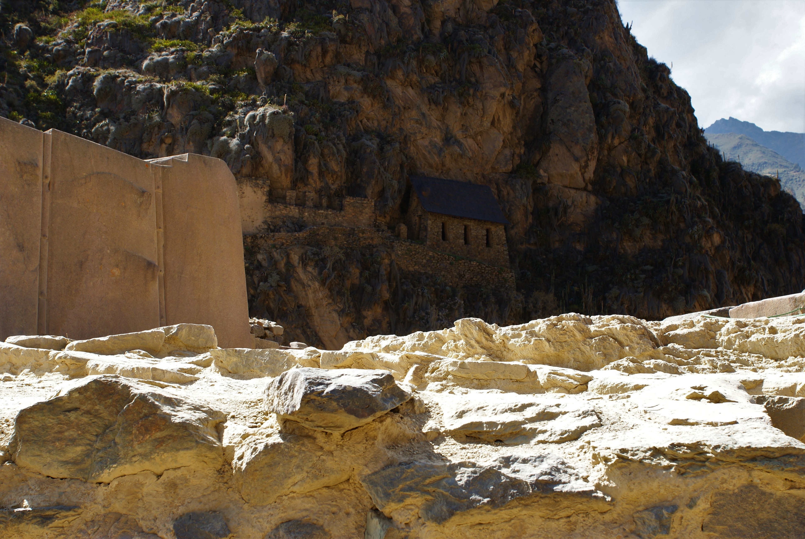

Machu Picchu et autres ruines Inca
La septième merveille du monde, quand même !
Dans cette article, pour une fois on ne va pas suivre l'ordre chronologique de nos pérégrinations, mais plutôt un découpage géographique des différents sites. Comme on a fait quelques aller-retour, ça nous semble plus simple pour tout le monde
Le Machu Picchu
LA star des ruines Incas, le must du must, la septième merveille du monde, le Machu Picchu !!!
Bon déjà, outre son emplacement incroyable et son mysticisme, il faut bien comprendre que pour les Incas, le Machu Picchu n'était pas le site le plus important. Et il n'attisa pas non plus la convoitise des colons espagnoles lors de leur massacre conquête. Du coup, pourquoi ? Comment ?
Aucune idée. Je crois que ce fut un site oublié, puis redécouvert plus tard. Il est quand même implanté à l'amont extrême de la vallée sacrée. Cela doit donner une signification particulière. Mais bon bref, par exemple la ville de Cusco était bien plus importante pour les Incas, dans le symbole politique et dans la place stratégique qu'elle occupait.
Toujours est-il que ça reste un site magnifique à explorer, reculé, planté à un endroit improbable en haut d'un mont saillant. Avec une vue imprenable et une panorama à couper le souffle. Ce ce qui maintenant donne tout son charme au site bien entendu.
Alors voilà, nous pour des raisons de planning, on a décidés de le faire sur 3 jours, en sortant du volontariat. On visite avec 2 voyageurs rencontrés à l'hacienda, Shane un canadien gaffeur et sympathique, et Aude une française des Antilles. Il faut bien 6h de voiture depuis Cusco, à cela s'ajoute 2h de marche dans la vallée pour rejoindre un camping au pied de la cité. C'est fatiguant, on va pas se mentir. Et le matin, on a nos billets pour la première heure (6h). Avec 1h30 d'ascension annoncées, plus une petite marge de sécurité, on se pointe vers 4h à l'entrée, les gueules enfarinées. Erreur de débutant : on a pas pris la peine de vérifier l'heure d'ouverture du site. Résultat on doit attendre 5h pour pouvoir enfin s'élancer à l'assaut de ce bon vieux Machu Picchu. Et il nous faut monter en 1h aussi, si on veut profiter du privilège d'être dans les premiers à accéder au site. Du coup on turbine un peu, et cette ascension est loin d'être facile. Mais le défi est relevé, on tient le chrono, et à 6h on rentre sur le site. Au début on est dans le flot de personne, un peu frustrés, mais très vite les gens se dispersent, on peut faire un peu notre vie. On ne manquera pas les premiers rayons de soleil frappant le temple tout en haut, un moment magique. On est rejoint ensuite par Aude et Shane qui eux avaient des billets pour 7h. Et on fait le tour du site ensemble, glanants des informations ci-et-là en laissant traîner nos oreilles indiscrètes lorsqu'on croise des guides. Quand on est repus de la magie inca, on se bouge les fesses pour redescendre rapidos, et avaler les 2h de marches pour être sûrs d'avoir un taxi pour le retour à Cusco dans la journée. En effet, on veut absolument être en ville le lendemain pour la fête du soleil, l'Inti Raymi.
Ollantaytambo et Moray
Lors de notre premier passage à Cusco, on est partis voir quelques sites de ruines inca, à deux heures de la ville, Ollantaytambo et Moray.
Ollantaytambo est une des dernières forteresses de la résistance inca face aux espagnols. Perchée sur un promontoire rocheux, on peut y voir au sommet une caserne militaire et un temple dédié au soleil (tiens donc). Un pan de mur remarquable, constitué de 6 blocs de pierres impressionnants, est une curiosité en soi. Comment les incas pouvaient arriver à monter ces immenses blocs si haut et les faires s'encastrer les uns dans les autres aussi précisément ? Même si l'enigme a semble-t-il était résolue, la prouesse force l'admiration. Et comme toujours, il y a ces grandes terrasses de cultures pour subvenirs aux besoins (ils avaient l'intelligence de faire tenir une partie de leurs moyens de production au sein de l'enceinte fortifiée). Et en bas les ruines d'un ensemble de bâtiment dédiés à l'eau, avec un canal d'irrigation et tout un jeu de fontaines encore en fonctionnement. Une visite fort agréable. On y retournera même une deuxième fois avec nos amis du volontariat et on montera voir les greniers incas flanqués sur la colines en face de la cité, sur les hauteurs. Une belle vue aussi d'ailleurs, qui permet de voir un bout de la forteresse sans payer le billet d'entrée (héhé !).
Le village en lui même est également une attraction en soit, très mignon, avec un joli marché, quelques restaurants et un vieux quartier. Quand nous arrivons, c'est la folie des attractions. Tout d'abord de grandes processions (comme à Cusco) où les différentes familles dans leurs plus bels apparâts débordent d'energie pour défiler et finir sur la place principale par un spectacle de danse traditionnelle. En se baladant dans les rues, on tombera aussi sur un mariage en même temps, avec un chapiteau bien animé. Bref on ne s'ennuit pas ici.
Pour la fin de la journée on souhaite se rendre à Moray. On décide de ne pas suivre les recommendations de l'office du tourisme qui nous dit que le seul moyen est de louer un taxi privé (très cher), on trouvera sans mal un bus et un taxi collectif pour notre escapade (avec un chauffeur fort sympathique de surcroît). Moray est donc une curiosité époustoufflante : imaginez au milieu de la montagne, une succession de terrasses en cercles concentriques descendants au creux de la roche. Il s'avère que le site était en fait un laboratoire d'agriculture inca. Chaque descente de terrasse fait perdre 1°C. Il pouvait ainsi sélectionner les cultures à entreprendre en fonction de la localisation. Malins ces incas ! Ils ont pas dominé leur monde pour rien.
Pisac
Le site des ruines de Pisac se situe à 2h30 de bus de Cusco, accroché encore une fois à un promontoire rocheux. Ils savaient se placer les incas ! Le village, au pied de la montagne, est assez mignon avec une grande place centrale sur lequel il y a un marché d'artisanat et de babioles assez important. Il y a un peu une atmosphère hippie avec pas mal de restaurants bio/vegan (sans condescendance de ma part, j'aime bien ces endroits), des boutiques de produits chamanico-spirituels.
Mais le principal intérêt de l'endroit est bien entendu la citadelle de Pisac, haut perchée sur le flanc rocheux, avec encore son lot de caserne militaire, habitations, terrasses de cultivation, temples, etc. La totale des places fortes Incas. On décide de tout faire à pied, sans se rendre compte que quand même, ça monte dru, et il nous faudra plutôt 3h pour atteindre la cime que les 2h annoncées. L'autre solution choisie par la plupart des visiteurs et de payer un taxi pour faire le tour, monter au niveau des anciennes habitations et redescendre tranquille par les ruines. Mais on ne mange pas de ce pain, on a voulu se dépenser un peu. Et aucun regret, on a pu emprunter deux chemins différents à l'aller et au retour. C'était bien cool. Et la vue sur la vallée de là-haut est vraiment grandiose, avec des monts autour à plus de 6000m d'altitude !
Piquillacta et Tipon
Piquillacta et Tipon sont des sites archéologiques qui se trouvent au sud-est de Cusco, à 1h30-2h. Nous sommes allés les visiter sur le week-end depuis notre volontariat.
Piquillacta donc est une ancienn cité Wari, apparamment la civilisation qui a donné l'empire Inca (si on en croit les archéologues et pas la légende qui dit que le roi et la reine inca ont émergé du lac Titicaca). C'était clairement une place forte, avec une grande muraille qui entoure la cité et un chemin de ronde. Cela dit, la différence bien notable même pour nos yeux de novices c'est que les murs sont plutôt faits de l'empilement de petites pierres. Un peu comme on pourrait le faire chez nous, et pas ces immenses blocs propre aux constructions incas. Le petit musée, à l'entrée, certe modeste, est plutôt intéressant et bien fait. On peut même voir le squellette d'un tatou géant d'avant notre ère.
Une bonne balade sur ce site, on s'arrêtera même pour une "petite" pause dessin avec Maïlys.
Ensuite Tipon, site Inca remarquable pour son systèmes d'irrigation toujours fonctionnel qui alimente de grandes terrasses pour l'agriculture. Il y a aussi quelques habitations autour. Le site est, encore une fois, un peu sur les hauteurs de la vallée, mais pas si haut. On prendra quand même le taxi pour monter (par manque de temps), mais le détour vaut en effet bien le coût, la vue est splendide (et en plus vraiment peu de touristes).
Autour de Cusco
Sacsayhuaman
Alors Sacsayhuaman ("sexy woman" comme nous disent de dire ici les péruviens, certainement fatigués de nos prononciations approximatives du quechua) est un gros site archéologiques surplombant Cusco. Certainement le plus important à voir dans la ville et ses environs. Il s'atteint très facilement à pied et permet donc d'atteindre un panorama incroyable sur Cusco et sa vallée, et de pouvoir voir se dessiner le fameux puma en contrebas (la ville, au temps des incas, avait la forme d'un puma). On peut y apprécier ces fameux mûrs faits d'énormes rochers taillés aux millimètres et encastrés les uns aux autres. Et ici, ils sont particulièrement impressionants, pour vous partager un peu mon ressenti. On peut également y voir des temples avec des tables sacrificielles encore débout. Et, pour notre plus grand plaisir, des tobogans incas. En réalité ce sont des blocs rocheux faisant apparaîtres des veines lissées et erodées par le temps qui font aujourd'hui d'excellents tobogans pour les visiteurs. Il y a encore d'enorme bloc de pierre par endroits, témoignant du fait que le site n'était pas finis quand les espagnols sont arrivés et se sont emparés de Cusco. J'ose à peine imaginer ce qu'aurait pu devenir ce site s'il était resté aux mains des incas. Une légende raconte qu'il y avait un jeu de tunnels qui permettaient de rejoindre la ville de Cusco et le temple du soleil en bas.
C'est ici aussi qu'on est venu voir l'Inti Raymi. Avec, clou du spectacle, un simulacre de sacrifice. Mais Maïlys vous en parle mieux que moi dans son article sur Cusco.
Q'enqo
Petit lieu un peu sur les hauteurs de Cusco, mais apparemment d'une grande importance spirituelle pour les incas. Ils y pratiquaient de nombreuses cérémonies, dont les fameux sacrifices (de lama, ou d'homme). On peut encore voir sur la roche taillée les petits canaux qui servaient à recueillir et guider le sang du malheureux sacrifié. Encore une fois, avec les incas, l'empillement millimétré de gros blocs de pierres est impressionnants.
Conclusion
Je n'ai pas vraiment à conclure grand chose. La visite des sites incas m'a beaucoup plu. Si jamais vous deviez passer dans le coin, je recommande quand même l'achat de ce ticket touristique tant décrié, et faite comme nous, étaler vos visites sur 10j. Parce que c'est vrai qu'au bout d'un moment, les ruines, ça donne la sensation que ce ne sont que des pierres empilées. Et à moins de se payer un guide, les sites sont assez avares en information (peu de panneau d'explication). Donc pour ne pas se lasser c'est bien de profiter de ces 10 jours de visite possible. J'ai également beaucoup apprécié la culture Inca, son iconographie, son esthétisme. Comme nous n'avons malheureusement pu voir qu'une partie restreinte du Pérou, je la retrouverais avec grand plaisir.


 


 <\div>
<\div>